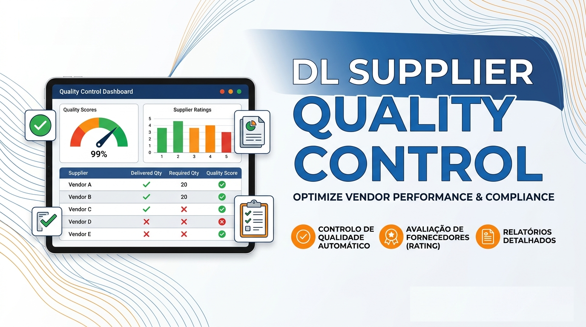
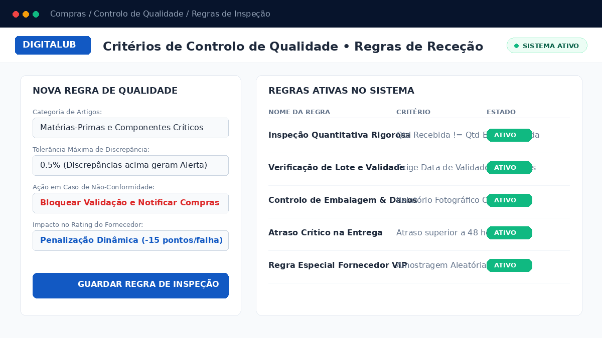
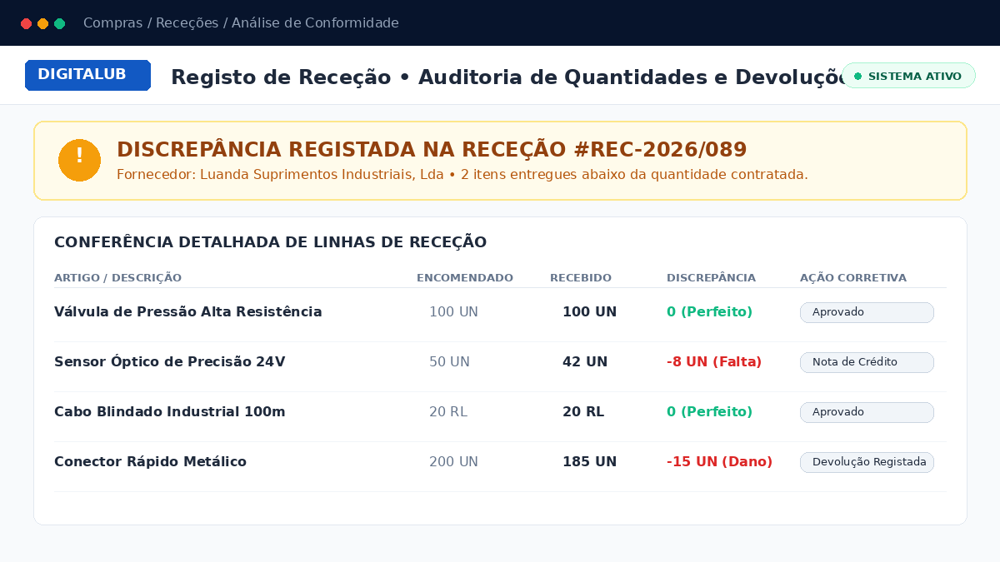
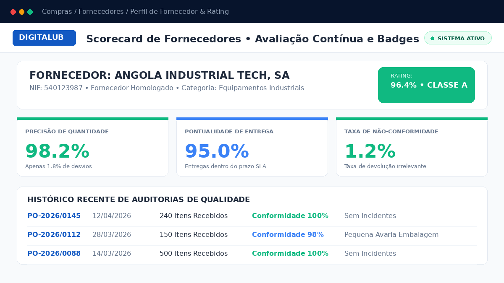

Proteja a sua cadeia de abastecimento. Registe discrepâncias de receção, controle defeitos e calcule automaticamente o rating de pontualidade e conformidade de fornecedores.
Tolerância Rigorosa
Matriz dinâmica de avaliação de risco e histórico de receções.
Deteta automaticamente faltas ou excessos no cais de receção, gerando registos de discrepância imediatos associados à ordem de compra.
Calcula a classificação percentual (Classe A, B, C) de cada fornecedor com base na precisão de entrega, devoluções e cumprimento de prazos SLA.
Exibe o selo de classificação diretamente no formulário do fornecedor e na cotação de compras, orientando o comprador na melhor decisão comercial.
Implementação descomplicada com retorno operacional imediato em 3 etapas simples.
Configure critérios de aceitação por categoria de artigos, definindo limites de tolerância e regras de bloqueio para não-conformidades.

Durante a entrada de mercadoria no armazém, o sistema regista discrepâncias quantitativas e gera pedidos de devolução ou notas de crédito.

Consulte relatórios e gráficos de desempenho histórico dos parceiros, recompensando os fornecedores confiáveis e mitigando riscos.

Garantia de total interoperabilidade com a arquitetura oficial Odoo
| Versões Suportadas | Odoo 17.0 (Community & Enterprise) |
| Módulos Nativos Necessários | base, stock, purchase, purchase_stock, mail |
| Integração com Ecossistema | Compatível com fluxos padrão de compras, armazéns centrais e ERP multi-empresa |
| Tipo de Instalação | Standard Odoo Addon • Sem dependências externas complexas • Instalação Plug & Play |
Especialistas de referência em arquitetura ERP Odoo, soluções de alta performance e conformidade fiscal e regulatória para Angola. Os nossos módulos são desenvolvidos sob rigorosos padrões de código limpo, testes contínuos e estabilidade em produção.